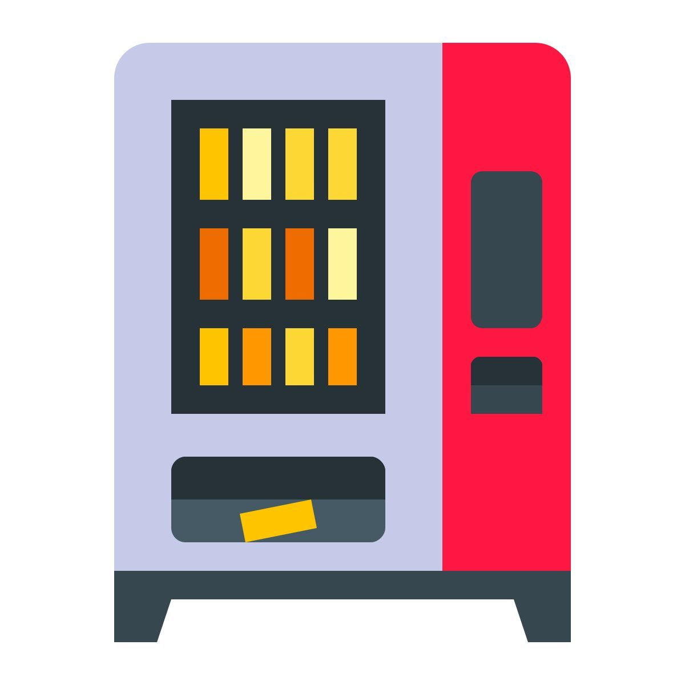
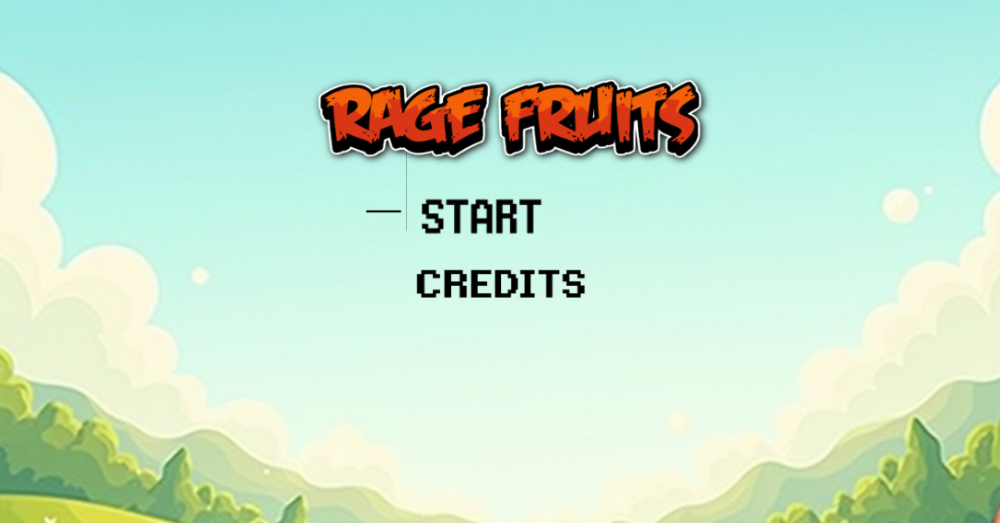
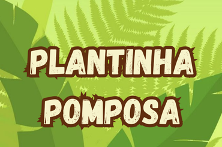
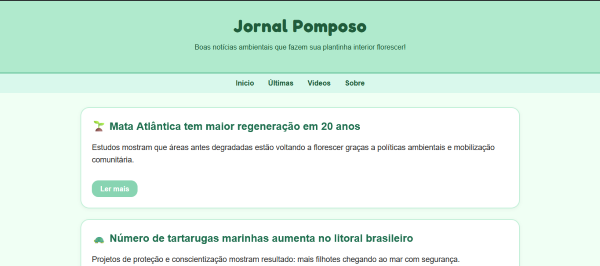
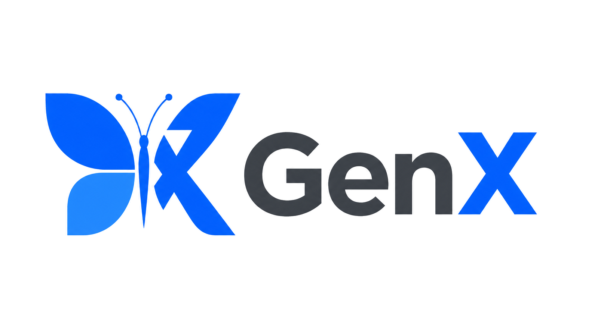
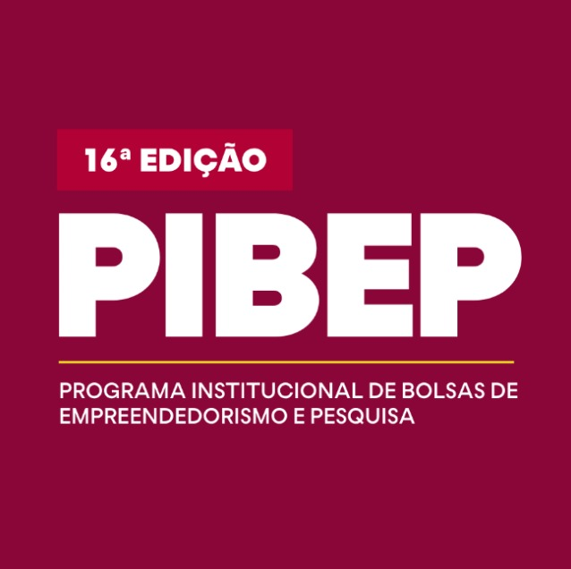
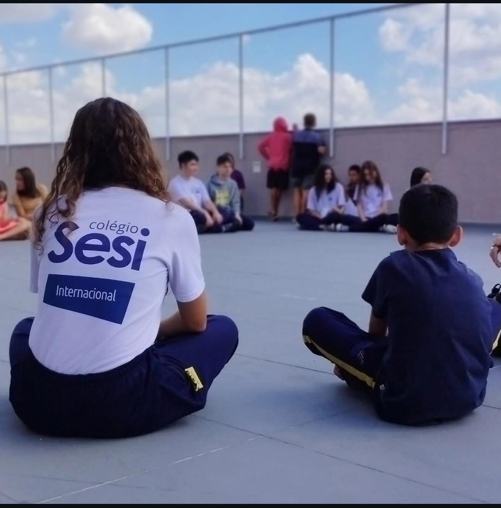
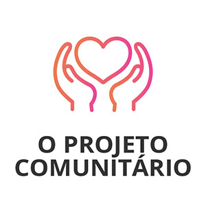

Daniel Langner Jager
Estudante de Ciência da Computação da PUCPR
OBS: O uso de IA foi focado na correção ortográfica, na pesquisa de efeitos mais complexos e no auxílio com JavaScript, área em que ainda estou em fase de aprendizado.
Estudante de Ciência da Computação da PUCPR
OBS: O uso de IA foi focado na correção ortográfica, na pesquisa de efeitos mais complexos e no auxílio com JavaScript, área em que ainda estou em fase de aprendizado.
Olá! Sou Daniel, estudante de Ciência da Computação no 4º período. Gosto de aprender construindo e é isso que você vai encontrar aqui: os principais projetos acadêmicos, experimentos pessoais e tudo o que veio da curiosidade de tentar.

Simulador de máquina de vendas com estoque e troco.

Jogo de pedra, papel e tesoura com placar.

Jogo de reflexo com pontuação progressiva.

App de cuidados e lembretes para plantas.

Diagramação e publicação de jornal.
Análise de dados sobre alimentos em C.

Aplicação web de apoio à avaliação clínica da Síndrome do X Frágil

Participação em programa de empreendedorismo da PUCPR.

Atuação como professor para crianças carentes.

Atuação como voluntário na Semana Mundial do Brincar.
Atuação como técnico de informática na Clínica de TIC.